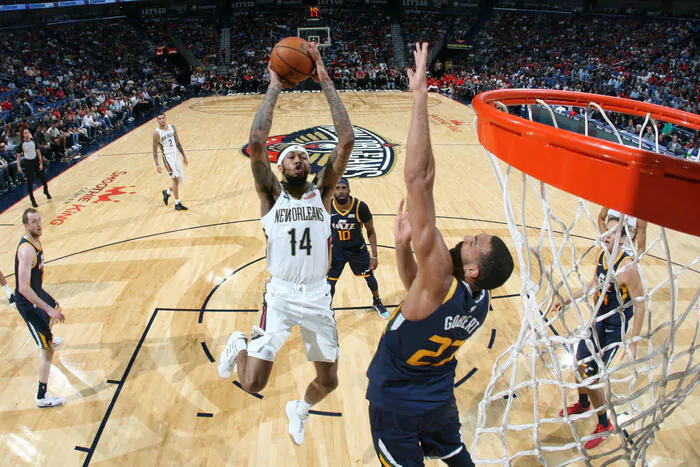

Escolhas

Utah Jazz @ New Orleans Pelicans
A equipe de Utah é uma das melhores da NBA atualmente, e conseguiu voltar para o trilho logo antes da paralisação da NBA. Já os Pelicans começaram mal a temporada apesar do seu talento jovem, porém semana após semana o time melhorou o entrosamento e a chegada do Zion após o tempo perdido pela lesão foi a cereja no bolo para consolidar a equipe como candidata para os Playoffs.
A partida é em quadra neutra não tem favorito claro. Dito isso, considerando que o Jazz atualmente paga 2.25 na vitória, seria a melhor escolha.